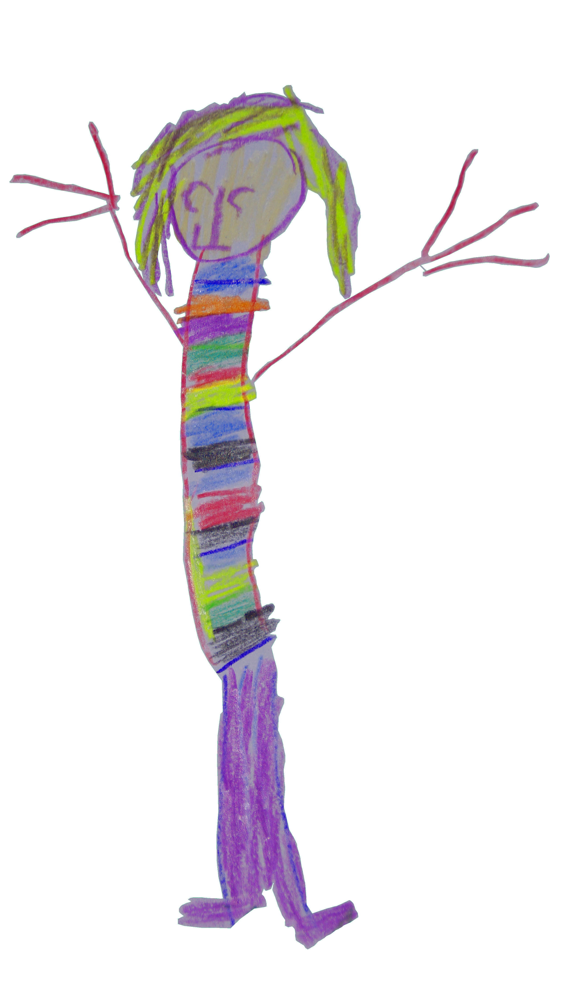

Sina Pfeifer
Staatlich anerkannte Sozialpädagogin B.A.
Bachelor Soziale Arbeit an der Ostfalia Hochschule in Suderburg
Bachelortitel: „Interaktion zwischen pädagogischen Fachkräften und Eltern in Bezug auf die Heimerziehung."
Berufserfahrungen:
Erfahrungen im Elementarbereich, im Bereich der Suchtprävention und Suchtberatung, psychosoziale Begleitung; In der ambulanten und stationären Jugendhilfe; Eltern,- Jugend- und Gruppenarbeit
Fortbildung:
01/2014 Kita-Move- Motivierende Kurzintervention für Eltern im Elementarbereich.